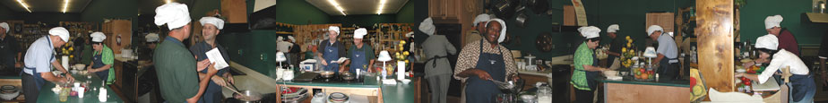

Truffles and Trifles started 24 years ago as a dream to share love of cooking and learn how to make being in the kitchen fun. Now, 24 years later, Truffles and Trifles is the largest, most successful cooking school in the Southeast and was recently named one of the top five cooking schools in the country by the Food Network.

This spring, the Orlando Sentinel inaugurated its first Culinary Hall of Fame to recognize those who have made significant contributions to how Central Florida eats, drinks, and dines. From all over Central Florida, only 10 were chosen for the Sentinel’s first Culinary Hall of Fame. Quoting from the paper, “Long before there was a Food Network, Orlando’s amateur cooks looked to Marci Arthur for tips and techniques on the preparation of all things culinary – and a lot of advice on nonfood subjects, too.” The article was published in the Orlando Sentinel's "Culinary Hall of Fame" on Wednesday, January 23, 2008. We at Truffles and Trifles consider it a tremendous honor to be chosen for the first Culinary Hall of Fame.
Our founder, Marci Arthur, is an outgoing dynamic cooking personality making celebrity appearances both locally and nationally. Marci has accumulated a host of accolades for her cooking skills. Her witty sense of humor and charm add spice to every Marci encounter. Marci and her staff of classically trained chefs insure that every cooking class is a memorable experience.
